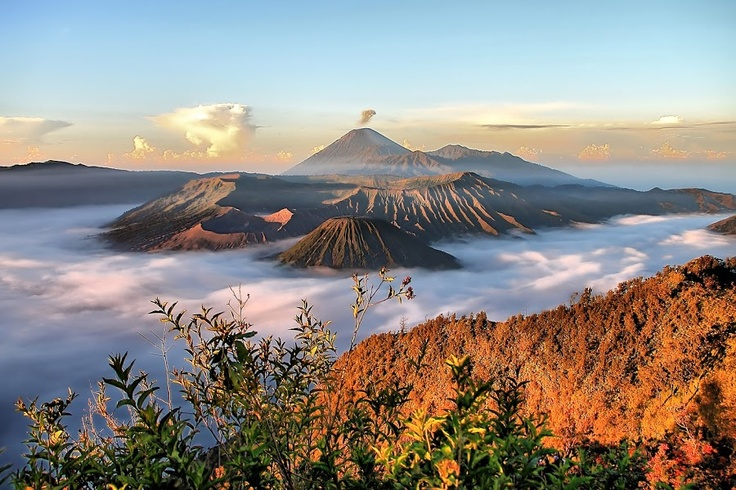
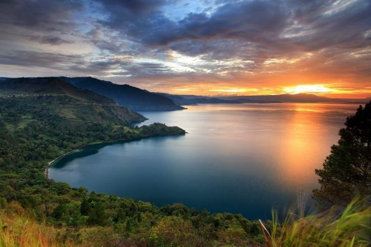

Visit the tourist attractions
Let's Explore!The Masterpiece of Indonesia
Iconic Attractions of the Archipelago

Iconic Attractions of the Archipelago
Curated tourist destinations
UMKM, Homestays & Guides
Routes, weather & ticket prices
Enjoy a vast, magnificent green savanna blanketed in the mist of dawn, with a magical panorama of Lake Toba from above. It is the perfect place to experience true serenity in the heart of North Sumatra.
A vast sea of sand, dramatic plumes of smoke rising from the crater, and the majestic silhouette of Mount Semeru in the distance—the beauty of a golden dawn at Bromo creates a magical landscape that one must witness at least once in a lifetime.

The world's largest volcanic lake, offering a blend of green hills, landscapes, cool highland air, and the rich Batak cultural heritage found in the tourist villages of Tomok and Huta Siallagan.
Comment
"The route guide and tips for chasing the 'golden sunrise' at Bromo are highly accurate and helpful. The storytelling style is interactive, cinematic, and keeps you wanting more!"
Jhonny L.
Backpacker & Blogger"This journal captures the magic of dawn at Holbung Hill so vividly. The description of the morning mist makes me feel as though I am standing right there, taking in the view of Lake Toba."
Vallery S.
Travel Photographer"Reading a travelogue about a mystical experience at Borobudur at dawn offers a unique sense of tranquility. The recommendations for photographic vantage points are highly useful for readers."
Mike S.
Solo Traveler